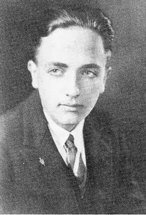

24 грудень 1910р.— 5 вересня 1992р.
Фріц Лейбер (нім. читається правильно як Лайбер) (повне ім'я — Фріц Ройтер Лейбер-мол. / Fritz Reuter Leiber Jr.) — видатний американський прозаїк, один з видатних представників "Золотого Століття" англомовної НФ. Народився в Чикаго (штат Іллінойс), закінчив університет Чикаго з дипломами психолога і фізіолога; грав на сцені (як і його батьки — актори "шекспірівського" театру, а батько, крім того, знімався в кіно), рік провів в теологічнії семінарії, але не закінчив її, працював редактором у науково-популярному журналі і викладав драму; з 1939 р — професійний письменник. Перша публікація — "Коштовності в лісі" (1939).
Почавши писати "героїчне фентезі" (винахід самого терміна критики приписують Лейберу) за пропозицією університетського товариша, Лейбер з першого опублікованого оповідання представив читачам своїх найпопулярніших героїв — шукачів пригод Фафхрда і Сірого Мишелова, жителів уявного міста Ланкмара, про якіх згодом написав кілька десятків захоплюючих ( "серйозних" і гумористичних) повістей і оповідань. Вся "сага" представлена в збірниках "Мечі і чорна магія" (Swords and Deviltry, 1970), "Мечі проти смерті" (Swords Against Death, 1970), "Мечі в тумані" (Swords in the Mist, 1968), "Мечі проти чаклунства "(Swords Against Wizardry, 1968)," Мечі і льодова магія "(Swords and Ice Magic, 1977), а також романі" Мечі Ланкмара "(The Swords of Lankhmar, 1968) і збірнику" Валет мечів "(The Knight and Knave of Swords, 1988); особливо виділяється коротка повість "Привітність по-Ланкмарскі" (Ill Met in Lankhmar, 1970), яка отримала премії "Х'юго" —71 і "Х'юго" —70. Історія створення циклу викладена в автобіографічному есе "Фафхрд і я" (Fafhrd & Me, 1963). Від типових творів "героїчного фентезі" сага Лейбера вигідно відрізняється тонкою стилізацією, розробкою характерів і "відстороненим" почуттям гумору. Лейбер швидко завоював репутацію майстра сучасної ( "урбаністичної") "літератури жахів". Яскраві приклади цього — розповіді "Димний привид" (Smoke Ghost, 1941), "Дівчина з голодними очима" (The Girl with the Hungry Eyes, 1949), "Людина, яка дружила з електрикою" (The Man Who Made Friends with Electricity, 1962), "Бельзенскій експрес" (Belsen Express, 1975); один з кращих оповідань Лейбера — "покидаю-ка я кістки" (Gonna Roll the Bones, 1967) — витончена притча про гру в кості зі Смертю. Перший роман Лейбера "Відьма" (Conjure Wife, 1943) оповідає про сучасних відьом (двічі вдало екранізований — "Страшна жінка" і "Гори, відьма, гори"); а "Наша леді Тьма" (Our Lady of Darkness, 1977) продовжує традицію готичного роману. "Тарзан і Долина Золота" (Tarzan and the Valley of Gold, 1966) — не зовсім вдале наслідування Едгару Райсу Берроузу. НФ-творчість Лейбера також принесла автору становище одного з провідних авторів жанру. У романі "Морок, зімкнися!" (Gather, Darkness !, 1943) описана майбутня теократична диктатура, якої протистоять вчені, що маскують свою науку під магію. Герої альтернативної історії — повісті "Тричі доля" (Destiny Times Three, 1945) — здатні втручатися в її хід, але в результаті всі існуючі "версії" починають входити в суперечність один з одним. Тій же темі, але вирішеною в несподіваному стилістичному ключі, присвячений цикл про "Війни Змін" — роман "Неосяжний час" (The Big Time, 1958) та оповідання, частина з яких об'єднана в збірник "Павук думки" (The Mind Spider, 1961 ); повністю розповіді циклу склали збірник "Війна Змін" (The Changewar, 1983). Загадкова "війна в часі" вищих космічних сил (Змії і Павуки) постає як майстерно поставлений театр абсурду; дія "п'єси" обмежена кімнатою в якомусь Притулку-санаторії для воїнів, розташованому поза відомого простору-часу; піротехнічний стиль і вільне володіння автором (в минулому — актором) "драматургією" виводить його дійство далеко за рамки традиційної НФ. Пацифістські настрої відрізняють розповіді зі збірки "Ніч вовка" (The Night of the Wolfe, 1966). Талант Лейбера-сатирика продемонстрований в романах "Срібні яйцеглави" (The Silver Eggheads, 1958) і "Привид бродить по Техасу" (A Specter Is Haunting Texas, 1968). У першому мішенню обрано видавнича індустрія, у другому — "балканізовані" США після третьої світової війни, а точніше, Техас, якому вдалося захопити владу над усім Північно-Американським континентом. Загниваючий, аморальний світ далекого майбутнього сатирично зображений також в ранньому романі "Зелене тисячоліття" (The Green Millennium, 1953). Сюжетно насичений роман "Мандрівник" (The Wanderer, 1964) — одне з кращих в НФ творів про глобальну катастрофу (в даному випадку викликаної несподіваною появою в Сонячній системі загадкового інопланетного корабля). Комп'ютер стає гросмейстером в одній з кращих "шахових" історій НФ — "64-клітинний дурдом" (The 64-Square Madhouse, 1962); в іронічній повісті "Бідний супермен" (Poor Superman, 1951) "відповіді" всесвітнього Електронного Мозку друкує на друкарській машинці захеканий чоловік, захований в потаємній кімнаті. Справжній сенс "любові" приходить до героїв оповідання "Корабель відпливає опівночі" (The Ship Sails at Midnight, 1950) тільки після контакту з інопланетянином. Героїня оповідання "Порядна дівчина і п'ять її чоловіків" (The Nice Girl with Five Husbands, 1951) живе в полигамному світі і потай страждає по моногамії, прирівняної до державних злочинів; а героїня оповідання "Маріана" (Mariana, 1960) переживає концептуальний переворот, виявивши, що навколишній світ — це спритна ілюзія. В оповіданні "Відро повітря" (A Pail of Air, 1951) описані пригоди сім'ї останніх виживших на Землі, "викинутої" зі своєї орбіти в результаті глобальної катастрофи; світ після катастрофи — місце дії оповідань "Місяць зелена" (The Moon is Green, 1952) і "Великий караван" (The Big Trek, 1957). Виділяються також "людяну" розповідь "Простір-час для стрибуна" (Space-Time for Springers, 1958), в якому здобутий розум супер-кошеня жертвує собою заради людського дитинчати, і "Встигнути на цепелін!" (Catch that Zeppelin, 1975). Багато в чому автобіографічна повість "Корабель привидів" (Ship of Shadows, 1969), герой якої — напівсліпий алкоголік (автор сам довгі роки лікувався від алкоголізму). Незважаючи на безліч нагород, Лейбер так і не встановив для себе репутацію автора НФ в тій мірі, в якій він завоював фентезі. Тому його НФ-твори часом недооцінюють. У творчості Лейбера відбилися як його захоплення — кішки, шахи і театр регулярно з'являються в його книгах, — так і переконання, — зокрема, відраза письменника до сексуального пригнічення і лицемірства. Різноманітність його літературних методів вражає. Тексти Лейбера завжди енергійні, і хоча його літературний стиль іноді здається химерним, але точність, з якою він вибирає слова, рятує його пишну, барвисту мову від недоладності — зокрема, в фентезійних творах. У науковій фантастиці Лейбер відчував себе менш впевнено і іноді не міг приховати погоню за ефектністю. Як він зізнавався, багато хто з його НФ-книг були перероблені з фентезі, коли ринок фентезі почав скорочуватися. Письменник не побажав створити легко впізнаваний шаблон для своєї НФ і, можливо, втратив в популярності, зате залишився чи не єдиним автором НФ і фентезі зі свого покоління, який продовжував трудитися і створювати чудові книги в кінці 1970-их років.